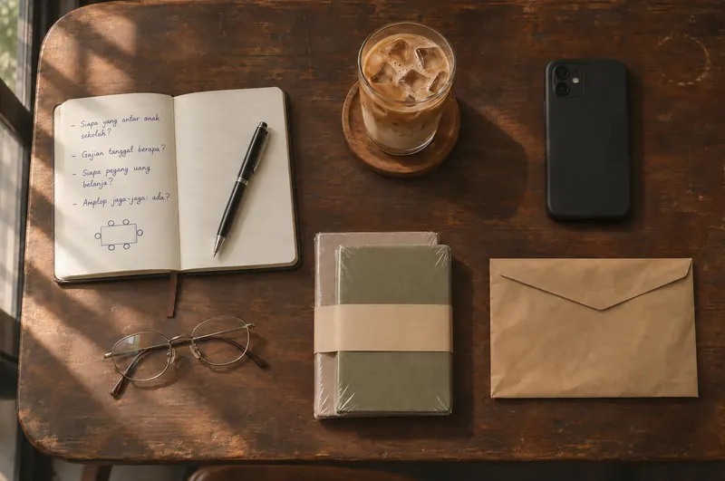
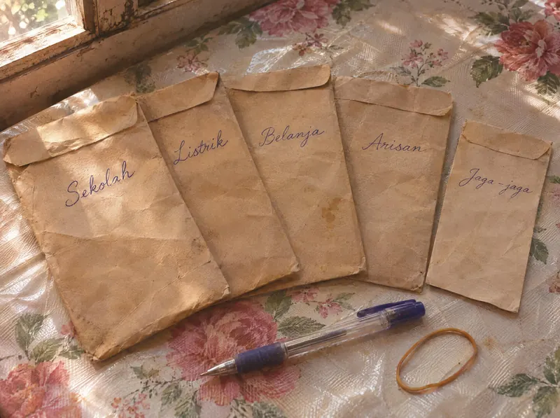
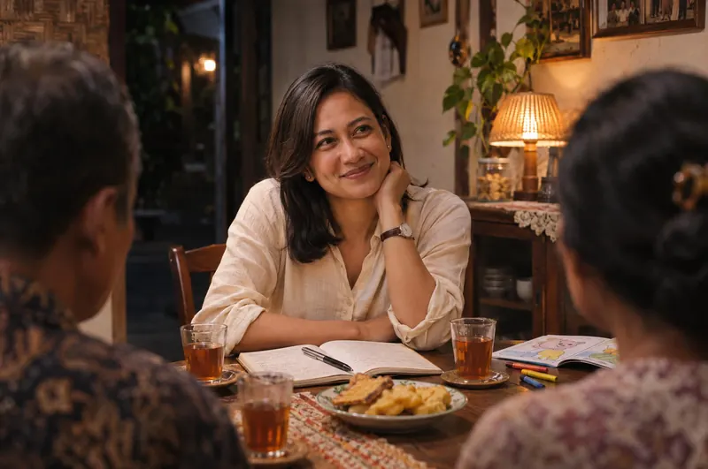
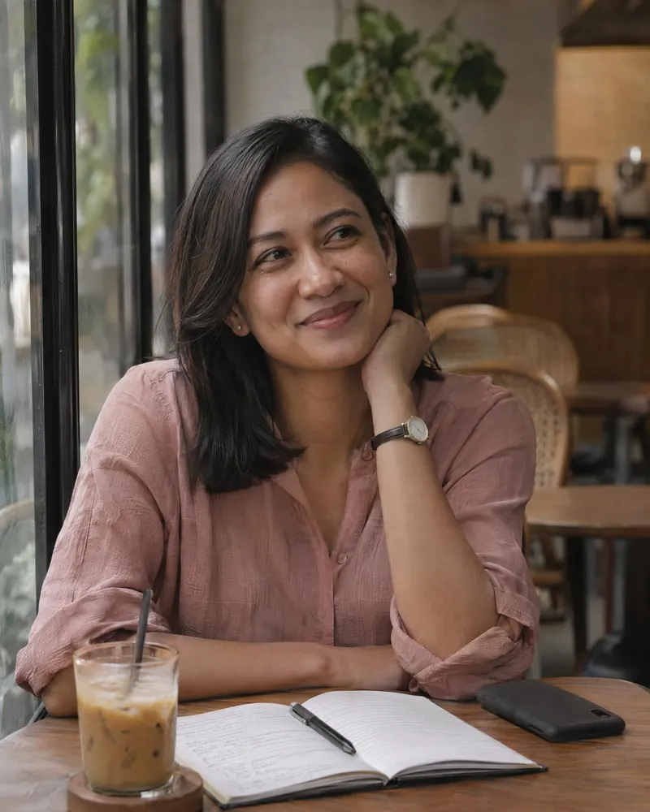

Buku catatan
Halaman pertama selalu soal kamu.
Sebelum bicara produk, saya mencatat hal yang kelihatannya sepele. Siapa yang antar anak sekolah. Gajian tanggal berapa. Siapa yang pegang uang belanja. Dari situ baru kelihatan apa yang perlu dijaga.

itu saya.
Kursi di depan masih kosong.
Kalau kita janjian di kedai kopi, saya biasanya sudah di sana dua puluh menit lebih awal. Kursi dekat jendela, es kopi susu, buku catatan terbuka.
Saya agen asuransi dan konsultan keuangan keluarga di Jakarta. Tapi itu nanti saja. Duduk dulu.
Orang bilang meja itu cerminan pemiliknya. Semoga yang ini cukup ramah. Pilih salah satu benda.

Buku catatan
Sebelum bicara produk, saya mencatat hal yang kelihatannya sepele. Siapa yang antar anak sekolah. Gajian tanggal berapa. Siapa yang pegang uang belanja. Dari situ baru kelihatan apa yang perlu dijaga.
Es kopi susu
Dua puluh menit sebelum janji, saya sudah duduk. Sebagian karena takut macet. Sebagian lagi karena saya senang melihat kedai pelan-pelan jadi ramai.
Ponsel
Urusan keluarga jarang bisa diceritakan sambil diselingi notifikasi. Kalau ada yang perlu dihitung, saya izin dulu sebelum membaliknya.
Amplop cokelat
Ibu saya dulu membagi uang bulanan ke dalam amplop. Saya masih menyimpan satu di tas, kosong, cuma supaya ingat.
Buku catatan baru
Yang lama belum habis. Saya tahu. Tapi kertasnya bagus dan sedang diskon, jadi anggap saja investasi.
Kacamata
Saya membaca syarat dan ketentuan sampai habis, termasuk bagian yang hurufnya paling kecil. Lalu saya ceritakan lagi ke kamu dengan bahasa meja makan.
Meja makan kami dipakai untuk apa saja. PR saya di ujung kiri. Belanjaan yang belum sempat dibereskan di tengah. Teh manis Bapak di sisi dekat jendela.
Setiap awal bulan, Ibu duduk di situ dan membagi uang ke dalam amplop. Sekolah. Listrik. Belanja. Arisan. Lalu satu amplop terakhir, bertuliskan Jaga-jaga.
Amplop Jaga-jaga selalu yang paling tipis. Anehnya, amplop itu juga yang paling sering dibuka. Ban motor bocor. Tetangga hajatan. Saya demam tengah malam.
Warna dinding ruang makan itu saya sudah lupa. Yang masih saya ingat: siapa duduk di sebelah siapa, dan wajah Ibu yang lega setiap kali amplop terakhir itu ternyata masih ada isinya.


selalu yang paling tipis
Pekerjaan saya sekarang kurang lebih masih mengurus amplop itu. Hanya saja, sekarang milik keluarga lain.

Saya agen asuransi dan konsultan keuangan keluarga. Dalam bahasa meja makan: saya membantu keluarga menyiapkan amplop Jaga-jaga yang cukup tebal untuk hal-hal yang berat kalau ditanggung sendirian.
Biasanya kita membahas empat hal.
Saya tidak selalu pulang dengan menyarankan produk. Kadang hasil obrolan pertama cuma daftar hal yang perlu dirapikan dulu. Itu juga hasil.
Tiga pertanyaan yang hampir selalu saya ajukan di pertemuan pertama. Coba jawab. Tidak ada yang disimpan, dan tidak ada jawaban yang salah.

sampai ketemu.
Ceritakan sedikit soal mejamu. Siapa yang duduk di sana, dan apa yang sedang kamu pikirkan. Kopinya saya yang pesan.